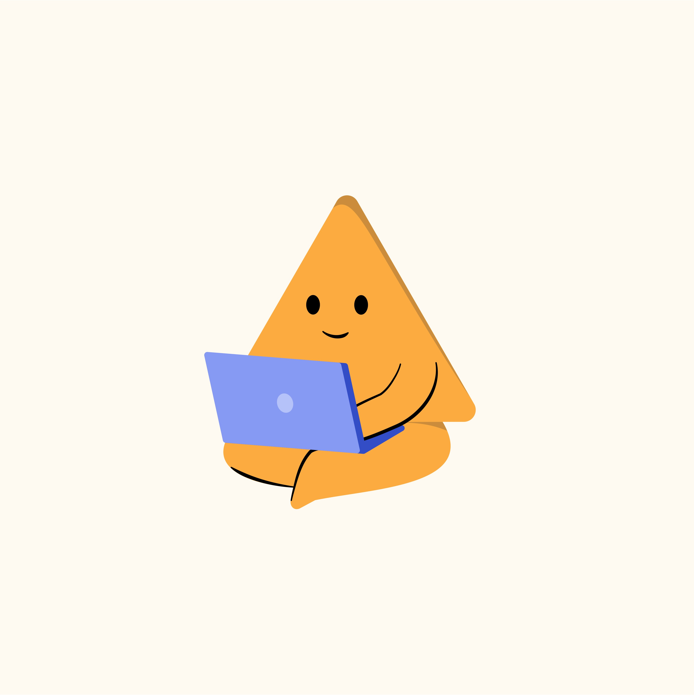
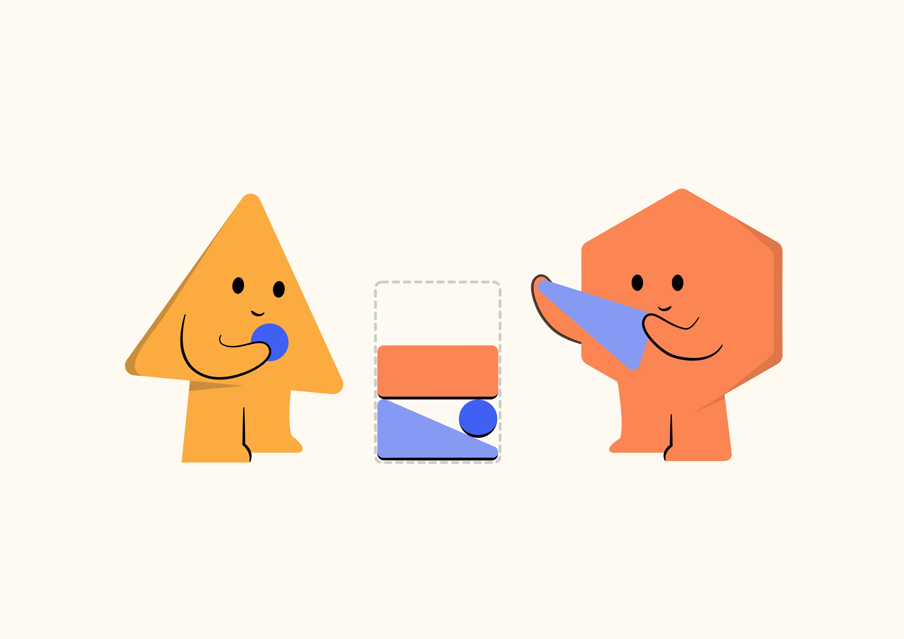
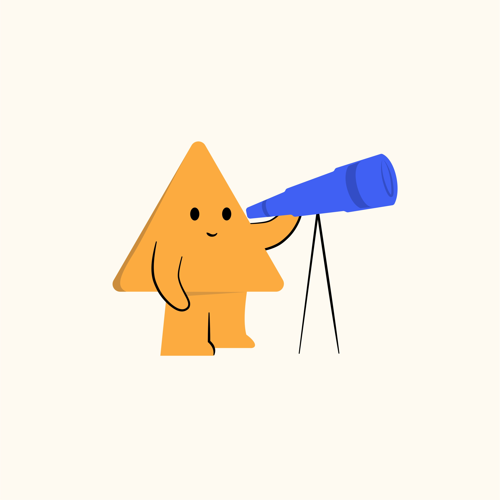

Journalisme
Formation et premiers pas dans le monde des médias
Observer, chercher, esprit critique, raconter
Contenu et Intégration web : de l’idée à la mise en ligne.

Un portfolio au un design original, épuré et léger qui démontre mes compétences et ma créativité
↗
Refonte du site Indirocracia, journal d'expérimentation narratif en ligne depuis 2014
↗
Application web de gestion de voyages en groupe.
↗Formation et premiers pas dans le monde des médias
Observer, chercher, esprit critique, raconter
Stratégie, contenus, ONG, community management
Créer de contenu et faire circuler des idées
Responsable de franchise, 25 personnes, +1000 clients/sem
Une équipe, des clients, des imprévus, de la performance
Rédaction web, SEO
Nouvelles expériences, nouveaux apprentissages, redaction, réinvention
Simplon (DWWM), projets personnels et stage
Comprendre et déconstruire ce qui se passe derrière l'écran
Je cherche des endroits où ces différentes experiences peuvent se rencontrer
Autonomie, monter en competences de façon permanente
Des sites plus légers, plus rapides, avec un impact environnemental réduit.
Des contenus et interfaces utilisables par toutes et tous, sans barrières.
Rendre les outils et les usages du web plus accessibles à chacun. Cet engagement rejoint ma volonté de créer un numérique utile et pensé pour les besoins réels.
Je suis disponible et ouverte à de nouvelles opportunités que ce soit en CDI, CDD, en freelance ou en mission